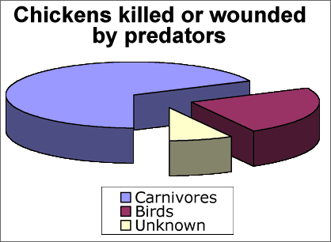

Bar charts can be very simple and need not take up much space in reports. Avoid the temptation to embellish them 'artistically' to make them more
visually appealing. These additions are collectively called chartjunk.
Bar charts can be very simple and need not take up much space in reports. Avoid the temptation to embellish them 'artistically' to make them more
visually appealing. These additions are collectively called chartjunk.If you don't want to print now,
Numerical and categorical data
In a data set, a numerical variable contains a number from each individual. A categorical variable classifies each individual into one of several groups.
Frequency tables
For a categorical variable, the frequencies for the distinct categories are the number of times each category occurs in the data set. The frequencies fully capture all information about the distribution of values and are usually presented in a frequency table.
Bar charts can be very simple and need not take up much space in reports. Avoid the temptation to embellish them 'artistically' to make them more
visually appealing. These additions are collectively called chartjunk.
Chartjunk adds 'noise' to a bar chart and makes it harder to read the real information that is contains. Rather than adding chartjunk, draw it small or replace it with a frequency table.
A common form of chartjunk arises when each bar is drawn as a 3-dimensional object. When the resulting 3-dimensional picture is rotated, it often becomes harder to compare the heights of bars and to read off values from the axes. In particular, perspective views should be avoided.

Replacing bars with objects
A more serious problem arises when the rectangular bars in a barchart are replaced with pictures of objects. This often visually mis-represents the proportions in the different categories — the visual importance of a bar is determined by its area or volume, not its height.

Other displays of categorical data
A stacked bar chart is simply a bar chart whose bars are stacked on top of each other. Stacked bar charts are often used to compare two or more groups of individuals.
A pie chart, splits a circle into segments according to the proportions in the categories. The angle for a category is given by its proportion.

In all three displays, the area of ink for any category equals the proportion of values in that category.
Bar charts and pie charts highlight different aspects of the data
Although a bar chart and a pie chart are visual representations of the same values (the proportions in the categories), they highlight different features of these proportions.
Bar charts provide better comparisons of the individual proportions, whereas pie charts allow us to assess the proportions in two or more adjacent categories. The latter is particularly useful if the categories are ordered or split into meaningful groups.

Chartjunk
Resist the temptation to 'enhance' pie charts with chartjunk. In particular, 3-dimensional pie charts can over-emphasise the categories closest to the viewer.

In general, it is better to draw a standard pie chart smaller rather than embellishing it with chartjunk.

Bar charts for quantities
Bar charts are most often used to show frequencies for discrete or categorical data but they can be used to display any quantity data. (Quantity data are 'amounts' of something and are always positive. They are also called ratio variables.)

Pie charts for quantities
Pie charts can also be used to display quantity data, but there is an additional requirement that must be satisfied before a pie chart is used. The total of all the data that are displayed must itself be meaningful.
In the published pie chart below, the individual values are death rates per 100,000 live births, so their total is meaningless. A pie chart therefore should not have been used.

We are often interested in whether a categorical distribution is the same in two or more groups of individuals. The categorical data in each group can be expressed as a frequency table. Combining these frequency tables into a single rectangular array gives a contingency table.

Categorical variables and groups
The raw data may be a list of values from each of several groups (as above) or the groups may be specified by a categorical variable in a single data matrix.

A contingency table may arise from an experiment (where one variable is controlled by the experimentor) or a survey (where there is no control over the individuals).
Example (from experiment)
To test whether vitamin C reduces the risk of catching a cold, a 1961 French study involved 279 skiers over two periods of 5-7 days. Skiers in one group of 139 were given 1 gram ascorbic acid (vitamin C) per day whereas those in the other group were given a tablet that looked similar but had no active ingredient (called a placebo). None of the skiers knew which of the treatments they had received.
| Cold | No cold | |
|---|---|---|
| Ascorbic acid | 17 | 122 |
| Placebo | 31 | 109 |
Example (from survey)
A health survey was conducted in the UK in 2000. The contingency table below gives the main reason for not using contraception by the 410 women aged 16-49 who were in a sexual relationship, not using contraception and not sterilised.
| Age | |||
|---|---|---|---|
| 16-29 | 30-39 | 40-49 | |
| Partner sterilised | 6 | 81 | 127 |
| Wants to become pregnant | 12 | 28 | 11 |
| Pregnant now | 15 | 20 | 2 |
| Menopause | 0 | 2 | 11 |
| Possibly infertile | 6 | 18 | 19 |
| Doesn't like contraception | 3 | 7 | 6 |
| Other reason | 15 | 8 | 13 |
Proportions within groups
To compare the distributions of a categorical variable in different groups, it is best to examine the proportions within the groups — the cell frequencies divided by their group totals.
In a study of racial differences in blood types, 145,057 blood specimens from the Blood Bank of Hawaii were tested.
| Blood type | |||||
|---|---|---|---|---|---|
| Ethnic group | O | A | B | AB | Total |
| Hawaiian | 01,903 | 02,490 | 00,178 | 0,099 | 4,670 |
| Hawaiian-white | 04,469 | 04,671 | 00,606 | 0,236 | 9,982 |
| Hawaiian-chinese | 02,206 | 02,368 | 00,568 | 0,243 | 5,385 |
| White | 53,759 | 50,008 | 16,252 | 5,001 | 125,020 |
From the table of within-group percentages below, it is clearer that blood groups B and AB are rarer for Hawaiians and Hawaiian-whites than for the other ethnic groups.
| Blood type | |||||
|---|---|---|---|---|---|
| Ethnic group | O | A | B | AB | Total |
| Hawaiian | 40.7 | 53.3 | 03.8 | 02.1 | 100.0 |
| Hawaiian-white | 44.8 | 46.8 | 06.1 | 02.4 | 100.0 |
| Hawaiian-chinese | 41.0 | 44.0 | 10.5 | 04.5 | 100.0 |
| White | 43.0 | 40.0 | 13.0 | 04.0 | 100.0 |
Bar charts of proportions
Bar charts can be used to graphically compare groups and it is again best to use proportions within groups rather than raw frequencies, especially if the groups are of different sizes.

Clustering the bars
Each cluster of bars above is a valid bar chart for one group. Alternatively, the same bars can be clustered by the variable of interest:

This makes it easier to make comparisons between the groups.
Stacking the bars
The bars for each group in a bar chart can be stacked to help make comparisons between the groups. Stacked bar charts are particularly effective when the categorical variable is ordinal (has categories that can be meaningfully ordered).
The diagram below is a stacked bar chart showing the results from a questionnaire in New Zealand about women's ratings of their own body size. The 246 women all had similar body-mass index and were a little lighter than average for their height.

It is clear from this bar chart that there were more Europeans in the study than in the other ethnic groups. By stacking the proportions within groups, this information is lost but it is easier to see that a bigger proportion of Europeans believe they are overweight than the other groups.

Time series
When sets of categorical measurements are recorded at successive times, time can be treated as a grouping variable.

The diagram below shows the increasing percentage of True values.

Binary variables
When the variable of interest can only take two possible values, it is called a binary variable. If the proportions in each group for one of these values are small, the bars for this category can be shown with an expanded vertical scale — no information is lost since the proportions in the other category are one minus them.